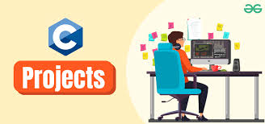

Rate My Housing

A web application that allows users to rate and review housing options. Developed using React and Firebase, it helps students find the best housing based on ratings and reviews.
CNN Project - TKAI Lab

Developed a Convolutional Neural Network (CNN) using PyTorch to classify chest X-ray images into COVID-19, Pneumonia, and Normal categories. View Colab Notebook
LangChain AI Agent

Systems Inspector powered by LangGraph and LangChain. This AI agent analyzes and monitors complex systems, automates workflows, and interacts with data using advanced language model capabilities. Built for extensibility, diagnostics, and automation.
Databricks Caster-Breakout-Prediction

This project is a Databricks notebook that uses PySpark to analyze historical caster data from a steel manufacturing plant. The primary goal is to build a machine learning model, specifically a Random Forest Classifier, to predict breakout events..
Self-supervised Learning BYOL

BYOL. Bootstrap Your Own Latent (BYOL), is a new algorithm for self-supervised learning of image representations
Projects in C

A collection of projects implemented in C, including data structures like linked lists and algorithms such as sorting and searching techniques.